The Two Handed Backhand:¶
Preparation and Backswing¶
John Yandell¶
In the first two articles, we've looked at some of the mysteries and complexities that high speed video reveals about the two-handed backhand. We found that what many coaches--including myself--believed to be one of the simplest technical shots turned out to be one of the most complex.
We saw surprising variety in the hitting arm positions, and also, how the hands and arms rotate through the motion. We found that there are actually 4 versions of the two hander, and that they can be hit with a variety of grip combinations. (link.) We also found that hand and arm rotation was an independent variable that players could incorporate to different degrees into any of the 4 versions. (link.)
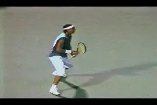
What does Rafael Nadal's backhand share with other top players?
Commonalities
Now let's shift and look at some of the commonalities across all these variations. In this article, let's look at the preparation, including the backswing. Again we are going to see some surprising things in relation to common beliefs about the two-hander. Then in upcoming articles we'll look at the hitting stances, the body rotation, the contact, the finish, and the wrap.
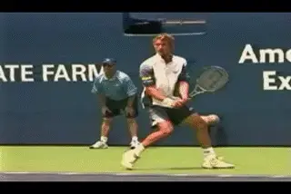
What does high speed video show about preparation and the backswing?
The Unit Turn
When we studied the modern forehand (link) we saw that despite the wide differences in the grips and the various rotations, there was one commonality all the players seemed to share. This was the first move, what we called the Unit Turn. It's the same for the Two-Handed Backhand. The first move in the preparation on the two-hander is a Unit Turn, regardless of the grip style, hitting arm combination, or any other variable. The Unit Turn means that the player initiates the motion by turning the feet and shoulders to the side, rather than by moving the hands and the racket.
It would be hard to stress the importance of the Unit Turn too much in teaching or developing your own ground strokes, backhand or forehand. Over the past few years I've written about it multiple times, and I'll probably be writing about it for the forseeable future. This is because it's going to take a long time for the Unit Turn to become widely taught--if in fact that ever happens.
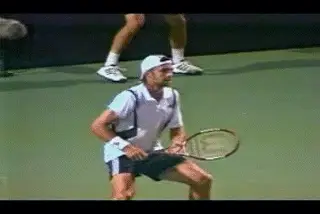
Watch the Unit Turn start the preparation.
The problem is two deeply ingrained beliefs about "preparation." The first is that the key to the preparation is "getting the racket back early." The second is that the backswing is the key to starting this early movement of the racket. These beliefs are still the sacred gospel in teaching groundstrokes for many, maybe even a majority of coaches, and are constantly repeated in day to day teaching around the world. Unfortunately, they don't describe what good players really do. And they aren't good advice for the average player to follow either.
The problem is that they encourage players to begin the motion with independent movement of the hands and arms. This inevitably leads to an incomplete body turn. It can also lead to a backswing that is far too large--or even grotesquely huge. An incomplete turn body and/or an oversize backswing leads to less total body rotation in the forward swing, but the tendency to be overrotated at contact. It can also lead to too much variation in the path of the hand and racket around the contact, and promote the tendency to muscle the ball and to restrict the followthrough.
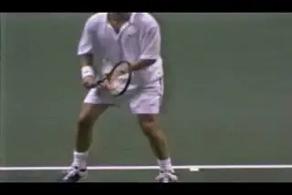
Watch how Andre's hands and racket come along for the ride.
The cumulative result is lost power, less spin, and consistent inconsistency. The problem is more common on the forehand, but as I go around the country filming top junior players, I'm amazed how widespread it is on the backhand as well, including the two-hander.
Unit Turn
So let's take a look at the Unit Turn of some of the best two-handed players in the modern game. It'd be tough to find an example better than Andre Agassi. Watch Andre's hands. First he slides his top hand down to establish the grip structure. From this point on there is virtually no independent hand movement. The left foot turns sideway, the upper body turns, so does the right hip and the right leg. And the hands and racket automatically turn with the rest of the body. They just naturally come along for the ride. At this stage in the motion, there is no independent backswing or movement with the hands to "prepare" the racket early.
The Unit Turn continues until the shoulders get turned at least 45 degrees to the net. Only at that point do Andre's hands start to move on their own. At this point they start to simultaneous move backwards and also somewhat out to the side. Unfortunately, far too many players have copied this sideways move with the hands but not the unit turn that precedes it.
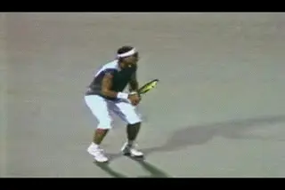
Nadal may be a sensation, but his Unit Turn is a commonality.
This first move is very similar for all top players. Spanish teen sensation Rafael Nadal is another typical example. Coming out of the split step, Rafael turns his hands and the racket face down. But this is idiosyncratic and doesn't really affect the motion. From this position, the shoulders turn as a unit and the arms and racket naturally pivot. They don't move on the own. Nadal may actually get even further turned than most players before the hands start to move.
Backswing
Now let's look at the backswing and how the players actually move their hands after the Unit Turn. Here we get to another major misunderstanding about the two-hander. On the forehand virtually all the top players take their hands upward after the unit turn and make some variation of a looping backswing motion.
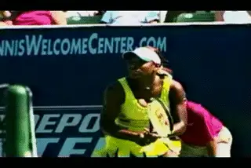
Though less than on the forehand, there is still plenty of variety in the two-handed backswing.
The size and shape of the loops varies tremendously. We saw how the racket could go directly upward, or move out to the right as it goes up. We saw that many players began the loop by inverting the racket face 90 degrees. We saw the height of hand in this backswing motion could range from below shoulder level to above the top of the head. We also saw that the height of the hand and the height of the racket tip were independent variables, and that the appearance and size of the backswing could vary dramatically depending on how a player combined these elements. (link.)
The backswings on the two-hander are simpler and less varied, but they are still frequently misunderstood. This is due in part to an underlying problem in all tennis teaching and analysis. This problem is the limitation of human visual perception. As we've noted throughout this series, the motions in tennis happen too quickly for the human eye to see accurately--about 10 or 12 times faster than the eye can actually record.
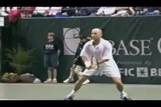
Watch the path of Andre's hands as they travel virtually straight back.
But the confusion is also due to the differences in the position of the hands versus the position of the racket tip, the same issue we encountered in trying to decipher the backswing on the forehand. This is why the high speed video developed by Advanced Tennis (link) is indispensable for investigating what really happens.
So what does the video show? If we look at a wide range of top players we see that their backswing motions are much straighter and more compact than the forehand, and that the hand positions stay much lower. Many players take the racket virtually straight back, with the hands continuing to move at the same height as in the unit turn. Others raise the hands slightly as they go back. To reverse the racket direction, some players make a small, compact loop just before the start of the forward swing. Some players use larger loops. But these loops are not close to the size of the loops in the typical pro forehand. The universal pattern is to take the hands back much straighter and lower than on the forehand.
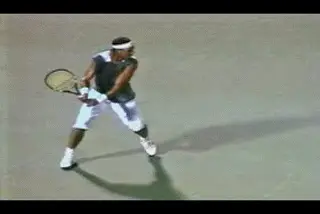
Like Agassi, a straight backswing but also two straight hitting arms.
Again, Andre is a good example. If we look at his hands, we see that as they move back they stay at about waist level--the same height as when he initiated the unit turn. When he reaches the full shoulder turn (see below), he rotates his hands and forearms backwards and down, changing the direction of the racket compactly and very fluidly as he starts to come forward to the ball.
Note that Agassi's racket head is tilted up at a slight angle as his hands move back. This angle determines the size of the loop traced by the racket tip as it changes direction. The angle varies from player to player and accounts for much of the confusion about the backswing, as we'll see. When the angle of the racket tip points higher, the tip traces a longer path as it changes direction. But this is different than the path of the hands.
You can see the two elements at work with Nadal. His racket head tip is titled up a little higher than Agassi. But watch how his hands stay at the same level in the unit turn. Interestingly, he is the only player we've filmed other than Agassi to hit with both arms straight in the hitting zone. (More on this and the rest of his game later in the Stroke Archive as well as in the Advanced Tennis section.)
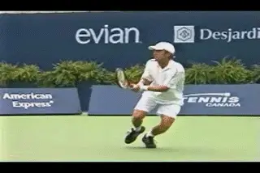
Watch the beautiful, minimal preparation of two top men's players, Kiefer and Johannson.
Minimal Men
We can see even more minimal backswings if we look at Thomas Johannson or Nicholas Kiefer, two top 20 men's players with excellent two-handers. Both take the hands straight back like Agassi. Kiefer also points the racket tip virtually straight back, while Johannson tilts it slightly down. In both cases, this more direct path reduces the size of the loop traced by the racket tip to an absolute minimum when it finally changes direction. It also gives us a great view of how the hands work. Watch how little motion it takes both players to change the direction of the racket and start forward to the ball.
Variations
Not every player goes back on such a straight line before initiating the loop. Other players raise their hands on an incline as the racket moves backward. This gives the backswing the shape a long "U" that is lying on it's side and is also somewhat narrower at the open end. Kim Clijsters is an example. Watch how her hands rise gradually on as the racket goes back.
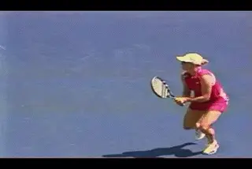
Racket tip higher, and hands moving back on a slight incline.
But this is different from the forehand where the hands go up higher and more abrubtly at the start of the motion. Like most of the women, Kim also starts with her racket tip pointing more upward than most of the men. Watch how this changes the path of the tip of the racket. Starting higher, the racket tip naturally moves back in a higher position, and then drops further as Kim changes direction. But the motion is still quite compact. Her hands typically reach about the center of her torso, or sometimes slightly higher.
Is It Really a Commonality?
OK, so Andre and a lot other players go pretty much straight back, but isn't it too extreme to claim that this is a commonality for all players? Don't many two-handed players really use a loop and startit by raising their hands? What about Maria Sharapova for example? She initiates her motion with a large circular backswing, right? That's why she has so much racket head speed, right? The answer is definitely no. The path of Sharapova's hands is actually more compact than Clijsters and more like that of the top men.
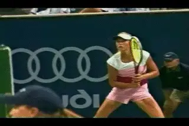
Watch the path of Maria's hands move straight back.
If we take a look at the high speed video of Maria, we can see what causes the confusion about her motion. This is how she holds her racket in the ready position. Notice it's pointing almost straight up and down. Her racket tip is much higher than that of the men or any of the other women. She's also hunched over from the waist, which makes the racket tip seem even higher.
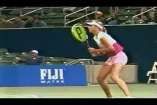
Maria's hands move back as directly as Agassi.
But watch what happens when she moves from this unusual starting stance. She begins her motion with a Unit Turn, the same as all other top players. Except for the grip shift there is no real movement of the hands. As she turns, the racket tip just continues to point upward, the same way it was in the ready position.
The feet and the body turn sideways with the shoulders reaching the characteristic 45 degree angle. As we have already seen, it's not about getting the racket back. The racket comes along for the ride and starts to prepare automatically as the body turns. Maria's racket then continues on this direct path with as little hand movement as Agassi. The only real difference is that the tip of her racket is still pointing nearly straight up at the completion of the unit turn. That's what fools even experienced coaches when they watch her motion with the naked eye.
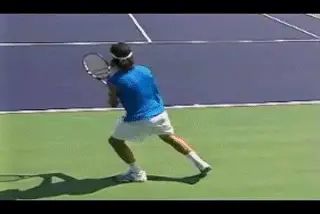
Where the racket points and how the hands move are different factors.
Because of this higher position, the racket tip definitely traces a larger looping path when it changes direction. But if we watch the path of the hands, they essentially travel straight back. Her hands may go up a few inches at the very end as the racket travels backwards. But the highest point she ever reaches is about the middle of her torso.
If we just watch the path of the racket tip, it's fair to describe the backswing as a loop. But it's not a loop traced by the hands like the forehand. The key point is to understand how this is caused by the angle of the racket not the position of the hands.
Many observers are confused by the differences. I was listening to some coaches talk about their players at a junior tournament and heard one say that because Sharapova started her motion with a looping backswing, his player HAD to develop the same motion. He believed that this motion was initiated by taking the hands immediately upward. Sure enough when I saw his player, her first move was to raise her hands. She had a big, mistimed circular loop and a limited Unit Turn.
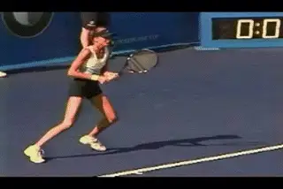
Her backswing is an exception, but watch the unit turn.
Maria isn't the only player who starts with the racket pointing up. Vera Zvonereva does the same thing, just to a lesser degree. So does Carlos Moya on the men's side. But it's one thing to hold the racket tip upward. It's another thing to then raise the hands independently in the Unit Turn. Watch Moya in particular. The racket is really high but the hand motion back is very straight. The motion to change directions is almost imperceptible.
Are there any exceptions? I would say Daniella Hantuchova. Her backswing motion is closer in size and shape to a forehand loop. Her hands start upward almost immediately and end up much higher than the other players, reaching about shoulder level. Early in the motion she closes the face completely to the court--another element associated with the forehand backswing--although the racket is back on edge long before she starts forward to the ball. But while all this hand motion is going on, her shoulder turn is continuous and full--the element most lower level players lose when they start to focus on the path of the hands.
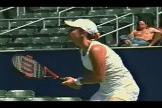
A Unit Turn, then a little more upward movement in the hands.
Lindsay Davenport starts with her racket pointing lower and more straight ahead than Maria or Daniela, but she also raises her hands sooner and a little higher than most players, though not nearly as much as Daniela. Again this motion isn't independent of the Unit Turn. Watch the height of her hands at the top of the backswing, still well below shoulder level.
The Men: Even More Compact
Interestingly, when we look at the men, we see that in general they tend to be more compact than the women. We've seen this in players like Agassi, Kiefer, and Johannson.
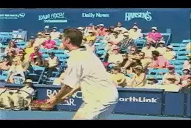
Safin: the hands move straight back and the racket tip rotates up.
It's similar for Marat Safin. Safin is interesting because like most of the men, he starts with the racket pointing more straight ahead, then makes a Unit Turn and starts the backswing motion with the hands going straight back. During the Unit Turn, however, he starts to tilt the racket head so that the tip is pointing up at about a 45 degree angle to the court.
This creates the same illusion we saw with Maria. As the racket changes direction, the tip traces a larger circle than many of the other players, but the hands stay low. In Safin's case the hands again get no higher than the middle of his torso.
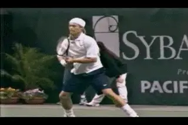
Hewitt's racket tip moves down rather than straight back or up.
Hewitt is an interesting case, because his racket tip initially goes somewhat downward rather than straight back or slightly up. He starts with the racket pointed upward at a slight angle, then drops the racket head during his Unit Turn so that the tip is at about a 30 degree downward angle.
From there he raises it again, and straightens out both arms. At the top of his backswing, he reaches a higher point than most of the men before dropping the racket again and coming forward. But study the path of the hands through most of the backswing.
Does the straight backswing cause the "double pump?"
The Williams Sisters
But wait a minute! What about the Williams sisters? Aren't they the classic example of the straight backswing--and everything that's wrong with using it? Isn't the straight backswing what leads to that ugly double pumping action so many people have commented on in the backhands of Venus and Serena?
If we look closely at the video the answer is no. It's not the shape of the backswing that causes those double pumps--it's the timing and the movement of the hands independent of the Unit Turn. If we look at what actually happens in high speed video, we can see that the double pump is the result of another version of the same fallacy we discussed above--the belief in "early racket preparation." In the case of Venus and Serena, this independent movement of the hands just happens to be straight back, rather than upwards in a loop.
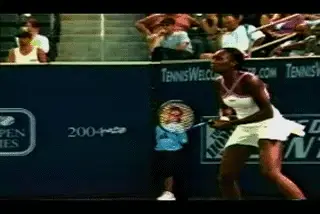
Look how far back Venus moves her hands independent of the Unit Turn.
Rather than let the hands come along smoothly and naturally with the unit turn, both Serena and Venus have the tendency to jerk the racket back almost violently at the start of the motion. Because of this, the motion of the hands can get ahead of the rest of the stroke. Look at the animation of Venus and see how far her racket has moved before her shoulders have even started to turn.
When the racket gets too far ahead both Serena and Venus have to stop the motion of the hands to let the body catch up. In the extreme case, they can actually go forward with the hands and then back again. This is the double pump action we sometimes see in both their strokes.
The Full Turn
We can see the differences in the backswing on the two-hander compared to the forehand very clearly when we look at the completion of the preparation, or the Full Turn. This is when the shoulders turn fully sideways, usually 90 degrees to the net or a little more. If we just look at the shoulders, the Full Turn on the two-hander is virtually identical to the forehand. It's the position of the hands that is different. This is due to the straight component in the backswing movement.
On the forehand, the hands separate as the racket goes up. At the completion of the Full Turn, the racket head is at shoulder level or higher. Meanwhile the opposite arm is stretched across the body, essentially parallel to the baseline and at about shoulder height. In general on the Two Hander the hands are at about waist level, or at most, at the level of the middle of the torso.
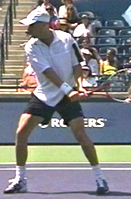
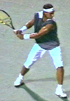
The hands are back further than the edge of the body. The height can vary from waist to about mid torso level.
The one commonality with the forehand is that the players are fully turned and have just started to initiate the loop that changes the direction of the racket--or they are ready to initiate it. It's just that the loop on the forehand is much larger, higher, and more circular.
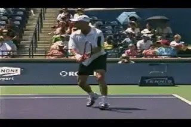
Note how low Andre's hands are as he starts to change direction of the racket.
The looping motion can be extremely minimal on the two-hander as we see with Andre, who gets to the completion of the turn with the hands very low and the racket titled only slightly upward. From here, he simply rolls his hands and arms backwards and down, in a beautiful compact motion that changes the direction of the racket. As he does this, watch the tip of the racket automatically make a small loop. Andre also continues this rotation of the hands and arms backwards, dropping the tip of the racket downward at an angle
This is an independent variable from player to player and even shot to shot, as we have seen. (link.) Hewitt is probably at the other extreme. Players may also drop the racket head more or drop it less--but this is completely independent of the size of the height of the backswing. Safin has quite a high racket tip, but very little additional backward hand rotation.
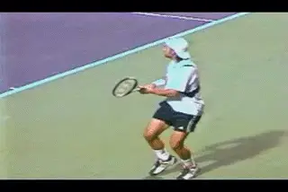
Watch the variety of motions used to change the racket direction.
Developing Your Preparation
So what does this mean for two-handers at all levels? What technical elements should you develop if you want sound preparation? The commonalities are the turn and the relative position of the hands and racket lower and further back. This is the key in teaching, and/or developing great preparation. Players should strive for a pure Unit Turn with as little hand motion as possible. They should then continue the backswing straight back with the hands. Every player will eventually (and naturally) develop his own feel for changing the racket direction. Some will expand the motion by raising the hands slightly in the backward motion, or raising the racket tip--or even developing something idiosyncratic like Hewitt. They may find they are more or less comfortable with the racket pointing higher or lower in the ready position. It doesn't really seem to make a discernable difference among the top players.
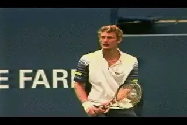
Fundamentals: The Unit Turn and Full Turn, but a variety of compact backswings.
The size and exact shape of the loop will always be slightly different from player to player, just as will the amount of backward hand and arm rotation. The goal should be to create a model based on the minimum amount of motion and to allow players to develop their own style from there. There is a lot of room for individuality and variety. But the foundation should be based on an understanding of what the top players actually do, not what we imagine they do. This is what the high speed video allows us see clearly for the first time across a wide range of players.
So that's it for the Two-Handed Preparation and Backswing. Stay tuned to see what the top players do as they set up their stances and move from the contact to the finish to the wrap on the modern two hander.

John Yandell is widely acknowledged as one of the leading videographers and students of the modern game of professional tennis. His high speed filming for Advanced Tennis and TPA have provided new visual resources that have changed the way the game is studied and understood by both players and coaches. He has done personal video analysis for hundreds of high level competitive players, including Justine Henin-Hardenne, Taylor Dent and John McEnroe, among others.
In addition to his role as Editor of TPA he is the author of the critically acclaimed book Visual Tennis. The John Yandell Tennis School is located in San Francisco, California.
← Hitting Stances | Advanced Tennis Index | The Forward Swing →